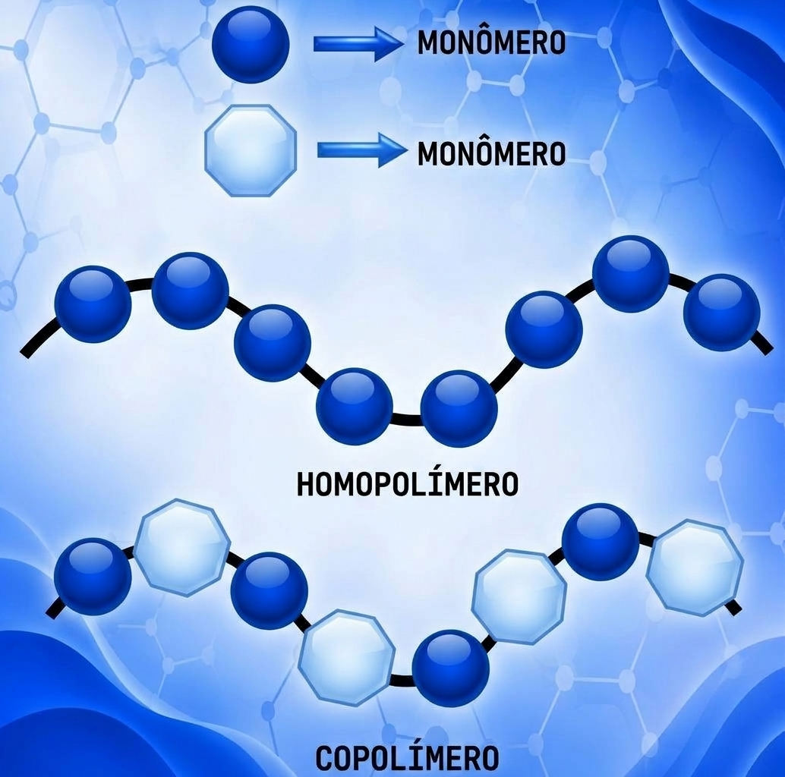

🧪 Polímeros
Macromoléculas formadas pelo encadeamento de unidades estruturais repetitivas denominadas monômeros.
Polímeros Naturais vs Sintéticos
• Naturais: produzidos por organismos vivos, como a borracha natural e a celulose.
• Sintéticos: produzidos em processos industriais, como o polietileno e o PVC.
Impacto Ambiental
A elevada durabilidade e o descarte inadequado de plásticos geram poluição nos oceanos e acúmulo de microplásticos na cadeia alimentar.
Exemplo do Cotidiano
Garrafas PET, embalagens plásticas e tecidos sintéticos, como o poliéster, fazem parte do cotidiano.

Estrutura básica de dois tipos de polímeros.